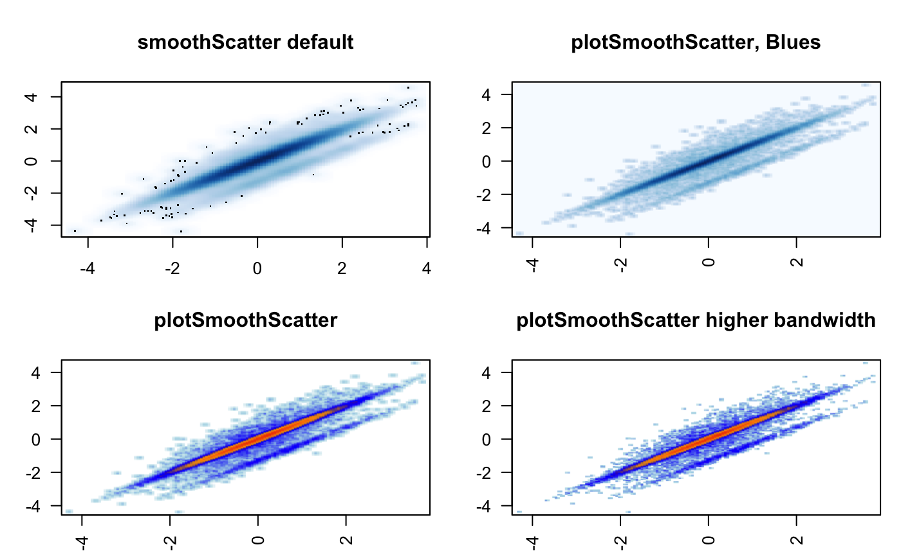
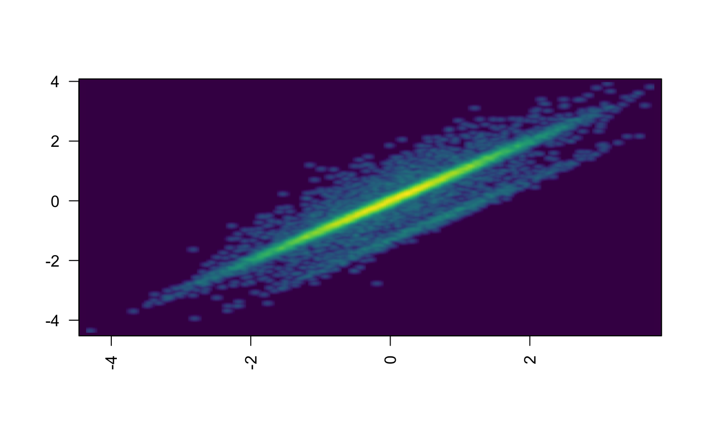

Produce scatter plot using point density instead of displaying individual data points.
plotSmoothScatter(x, y = NULL, bandwidthN = 300, transformation = function(x) x^0.25, xlim = NULL, ylim = NULL, nbin = 256, nrpoints = 0, colramp = c("white", "lightblue", "blue", "orange", "orangered2"), doTest = FALSE, fillBackground = TRUE, naAction = c("remove", "floor0", "floor1"), xaxt = "s", yaxt = "s", add = FALSE, applyRangeCeiling = TRUE, useRaster = TRUE, verbose = FALSE, ...)
| x | numeric vector, or data matrix with two or more columns. |
|---|---|
| y | numeric vector, or if data is supplied via x as a matrix, y is NULL. |
| bandwidthN | integer number of bandwidth steps to use across the
visible plot window. Note that this bandwidth differs from default
|
| transformation | function which converts point density to a number, typically related to square root or cube root transformation. |
| xlim | optional numeric x-axis range |
| ylim | optional numeric y-axis range |
| nbin | integer number of bins to use when converting the kernel density result (which uses bandwidthN above) into a usable image. For example, nbin=256 produces notably high detail, while nbin=32 produces lower resolution which may be more suitable when plotting multiple smaller plot panels. |
| nrpoints | integer number of outlier datapoints to display,
as defined by the
hidden but very useful
|
| colramp | one of several inputs recognized by
|
| doTest | logical, defines whether to create a visual set of test plots to demonstrate the utility of this function. |
| fillBackground | logical, whether to fill the background with the first colramp color, which is useful especially when that color is not white, and most visible when the x- and y-axes are not identical to the data range. Run doTest=TRUE with colramp="viridis" as a test. |
| naAction | character value, indicating how to handle missing NA values, typically when x is NA and y is not NA, or vice versa. valid values:
The latter two options are useful when the desired plot should indicate the presence of an NA value in either x or y, while also indicating the the corresponding non-NA value in the opposing axis. The driving use was plotting gene fold changes from two experiments, where the two experiments may not have measured the same genes. |
| xaxt | character value compatible with par(xaxt), used to control the x-axis range, similar to its use in plot(...) generic functions. |
| yaxt | character value compatible with par(yaxt), used to control the y-axis range, similar to its use in plot(...) generic functions. |
| add | logical whether to add to an existing active R plot, or create a new plot window. |
| applyRangeCeiling | logical, indicates how to handle points outside the visible plot range. Valid values:
|
| useRaster | logical, indicating whether to produce plots using the
|
This function intends to make several potentially customizable
features of smoothScatter plots much easier
to customize. For example bandwidthN allows defining the number of
bandwidth steps used by the kernel density function, and importantly
bases the number of steps on the visible plot window, and not the range
of data, which can differ substantially. The nbin parameter is related,
but is used to define the level of detail used in the image function,
which when plotting numerous smaller panels, can be useful to reduce
unnecessary visual details.
A related new function could be part of ggplot2, and is certainly on the todo list. However, frankly it is quite difficult to grok where one would obtain several of the values required by this function, notably the visible plot space per panel. The documentation for ggplot2 developers is not well described. That said, panelSmoothScatter could be created to handle the main features of this function. However, it would also need to call a custom imageDefault() function in order to handle the custom (and hopefully beneficial) mechanism of creating a properly-scaled raster image.
smoothScatterJam,
smoothScatter
Other jam plot functions: adjustAxisLabelMargins,
coordPresets, decideMfrow,
drawLabels, getPlotAspect,
imageByColors, imageDefault,
minorLogTicksAxis, nullPlot,
plotPolygonDensity,
shadowText, showColors,
smoothScatterJam, sqrtAxis,
usrBox
# doTest=TRUE invisibly returns the test data x <- plotSmoothScatter(doTest=TRUE);# so it can be plotted again with different settings plotSmoothScatter(x, colramp="viridis");